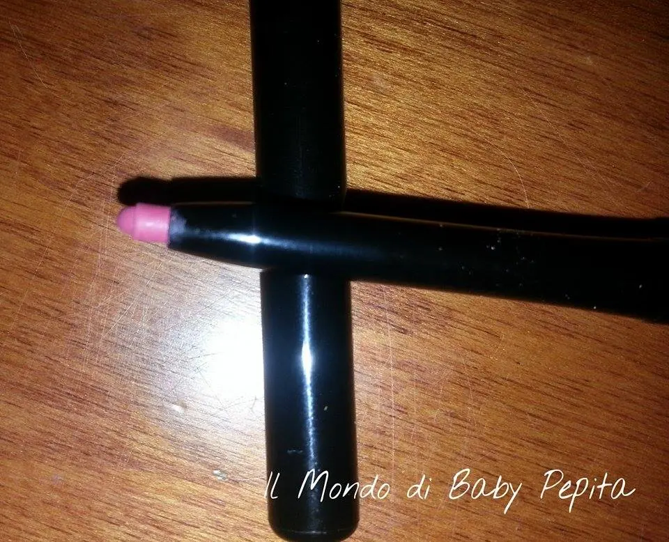
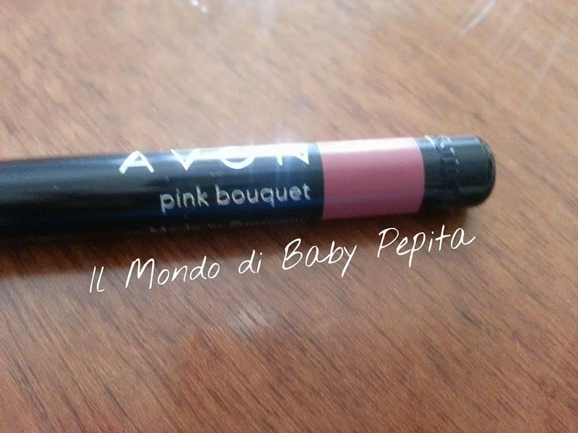
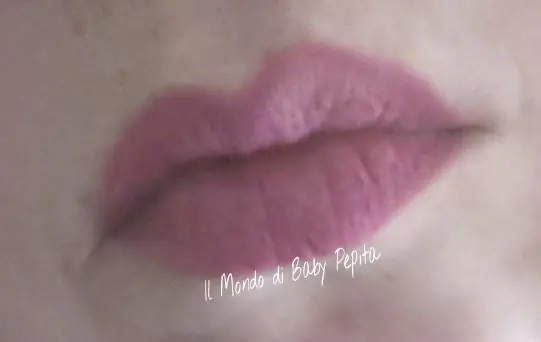
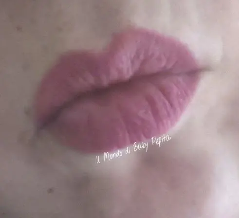

Avon - matita contorno labbra pink bouquet
Torniamo a parlare di questo brand che tanto uso.
AVON
Questo marchio negli anni ha sviluppato due fazioni, c'è chi lo ama e chi lo odia. .
Inizialmente dicevano perchè testava i prodotti sugli animali, negli ultimi anni dicevano che perchè i prodotti erano scadenti, io mi ci sono sempre trovata bene.
E' vero che negli ultimi periodi è molto migliorato e ha ripreso di nuovo il lancio ma sinceramente io così scadente non l'ho mai trovato..
Detta questa breve descrizione, se così vogliamo chiamarla, volevoo mostrarvi la matita che ho acquistato.
La contorno labbra GLIMMERSTICK MAKE UP Labbra Perfetto Lips
Disponibile in 5 colorazioni (Pink Bouquet, Red Brick, Mystery Mauve e Rich Ginger), questa matita si presenta retraibile.
Senza dunque nessun bisogno del temperamatite poichè al suo interno è presente una lima automatica.

Quella che ho acquitato io è la pink bouquet

0.25 g di prodotto per un prezzo variabile da 2.95 € a 7.95 €
Sulle mie labbra:


Matita molto morbida, quindi di facile stesura e anche molto semplice da sfumare, disegna le labbra perfettamente senza rischio di una linea spessa. .
Subito scrive già alla prima passata per intenderci.
Dura per un pò di ore, su per giù 7 ore abbondanti ed è molto confortevole, quasi non si sente. .
Consigliabile anche per tenere un rossetto più ore. .
PROMOSSA CON UN VOTO 8
